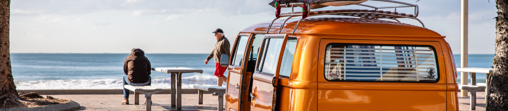

Sebagian orang mungkin berpendapat jika traveling merupakan kegiatan yang akan menghabiskan banyak biaya. Sehingga bagi Anda yang berpenghasilan pas-pasan, tentunya kegiatan traveling bukanlah hal yang masuk ke dalam anggaran.
Namun, jika Anda mengetahui ada banyak manfaat yang bisa didapatkan dari travelling. Mungkin kegiatan traveling bisa Anda masukkan ke dalam salah satu kegiatan yang wajib dilakukan. Namun jika saat ini masih banyak kesibukan.
Berikut ini ada beberapa manfaat yang didapatkan dari traveling
- Mengurangi Stres
- Salah satu manfaat travelling yang paling bisa dirasakan adalah dapat mengurangi stres. Biasanya stres dapat dikarenakan fisik, psikis, dan mental. Bentuk ketegangan yang terjadi akhirnya mempengaruhi kerja dan mood seseorang. Dengan travelling secara tidak langsung akan membuat pikiran dan tubuh yang tadinya tegang menjadi lebih rileks.
- Menjaga Tubuh Tetap Fit
- Melakukan liburan atau travelling akan membuat tubuh menjadi tetap fit. Dengan agenda liburan yang sudah direncanakan, tentunya akan membuat Anda berusaha tetap menjaga tubuh menjadi kuat dan sehat
- Misalnya saja Anda memiliki rencana mendaki gunung, tentunya Anda akan mempersiapkan diri termasuk kondisi fisik yang sehat. Mulai dari olahraga secara teratur, minum vitamin, dan masih banyak lainnya
- Menambah Teman
- Jika biasanya Anda hanya memiliki teman berasal dari lingkungan tempat tinggal, kampung, teman masa kecil, teman kantor, dan lainnya namun melalui travelling Anda bisa mendapatkan banyak teman. Namun tentu saja Anda harus mau untuk berteman dan bersosialisasi tinggi. Jangan menerapkan sikap indivudalisme karena manusia merupakan makhluk sosial yang membutuhkan bantuan orang lain.
- Menyeimbangkan Emosi
- Tidak hanya bermanfaat untuk fisik, travelling juga akan sangat bermanfaat untuk menyeimbangkan emosional. Hal ini karena saat berlibur, maka otomatis pikiran menjadi lebih damai dan tenang. Kenyamanan itulah yang sangat dibutuhkan untuk bisa menjaga keseimbangan emosional yang mana membuat kondisi tubuh juga akan ikut seimbang. Kondisi emosi yang lebih terjaga tentu saja akan menimbulkan ketenangan batin. Hal ini lah yang mendukung mengapa travelling sangat perlu dilakukan.
- Menjadi Lebih Fleksibel
- Manfaat lainnya yang didapatkan dari travelling adalah menjadi diri yang lebih fleksibel. Hal ini karena di dalam merencanakan dan menjalani travelling, tentunya akan memacu Anda untuk selalu berpikiran terbuka dan fleksibel. Sikap fleksibel serta diiringi dengan pemikiran yang terbuka akan sangat bermanfaat untuk Anda.
- Meningkatkan Keterampilan Sosial
- Manfaat travelling lainnya adalah dapat meningkatkan keterampilan sosial. Mengapa? Karena saat melakukan travelling, Anda dapat bertemu dengan banyak orang-orang baru serta bersosialisasi dengan mereka. Bertemu dengan orang dengan suasana yang baru adalah manfaat besar yang bisa anda terima.
- Memiliki Hubungan yang Lebih Baik
- Banyak orang yang merasa memiliki hubungan yang lebih baik ketika melakukan travelling. Anda bisa mencoba travelling dengan pasangan; yang mana dapat memperbaiki hubungan jauh lebih baik dari sebelumnya. Hal ini karena hubungan akan jauh lebih rileks dan senang saat berlibur.
- Menambah Wawasan
- Tidak hanya untuk jalan-jalan dan sekadar bersenang-senang saja, kegiatan travelling juga dapat memberikan manfaat untuk menambah wawasan yang Anda miliki. Saat melakukan travelling ke sebuah tempat, secara tidak langsung akan membuat Anda mengeksplor lebih jauh tentang daerah tersebut.
- Tinggal bagaimana Anda dapat mengambil sisi baik dari wawasan yang Anda dapatkan. Sehingga tak hanya dapat bersenang-senang, namun juga akan banyak ilmu yang bisa Anda dapatkan.
- Mendapatkan Banyak Inspirasi.
- Terkadang untuk mendapatkan banyak inspirasi memang membutuhkan banyak waktu dan bukanlah sesuatu yang mudah didapatkan. Hal ini karena inspirasi bisa datang karena pikiran yang tenang. Travelling merupakan salah satu cara yang bisa Anda lakukan untuk mendapatkan banyak inspirasi. Karena inspirasi adalah hal yang sangat berharga sehingga tidak ada salahnya untuk sering-sering melakukan travelling.